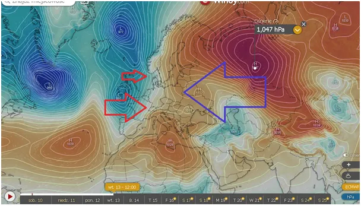
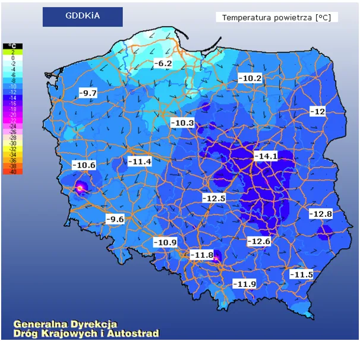
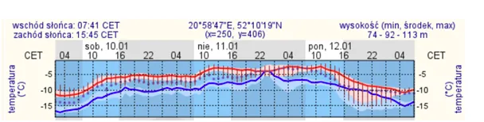
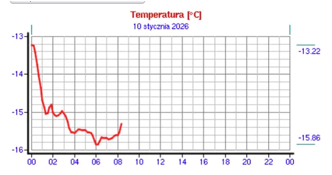

Temperatura szybko rośnie, na Mazowszu już tylko minus 15!
Na mapce prognoza baryczna na wtorek 13 styczna, gdy ma się rozegrać wielka bitwa oceanu z kontynentem. Wielka nadzieja zielonych, atlantycki niż, ma potężnego przeciwnika i nic nie jest przesądzone. Czy odwilż dojdzie do linii Odry przekonamy się po weekendzie.

Rozpogodzenia nocą to dla energii cieplnej otwarta droga w Kosmos, gdzie jest minus +-270 stopni. Ziemia ma swoje fizyczne ograniczenia w nagrzewaniu. Tak się dzieje w ciągu dnia, gdy dana połowa Ziemi jest zwrócona ku Słońcu. Opisałem m to tutaj https://pawelklimczewski.pl/2025/04/28/efekt-cieplarniany-co-to-jest-oraz-dlaczego-nie-mozna-zagotowac-wiadra-wody-na-swiecy/
Natomiast, gdy panuje noc, techniczne możliwości stygnięcia są o wiele większe, prawie nieograniczone i przed kompletnym zamarznięciem ratuje nas tylko nadchodzący świt. Zycie na Ziemi jest możliwe tylko dzięki temu, że noc i dzień trwają razem 24 h. Gdyby Ziemia kręciła się tylko o 1 h wolniej, co było u zarania czasów, całkiem możliwe, nie byłoby życia jakie znamy.

Skoro już mamy to szczęście i żyjemy, pomyślmy, dlaczego sprawą polityczną stało się mierzenie temperatury. Kolejny dzień z rzędu, polski model klimatyczny na Mazowszu zakłada, że jest 5 stopni więcej niż jest. Niby wszyscy wiemy jak jest naprawdę i nie wydaje się to czymś ważnym, ale to są dane, które są przechowywane przez ośrodki "naukowe" i będą podstawą dla epokowych analiz!


Na szczęście mamy swoją kronikę tych dziwnych czasów. Dlatego proszę o promowanie i wspieranie tej strony będącej archiwum tej dziwnej epoki. Na stronie jest już blisko 1000 artykułów i raportów.
Paweł Klimczewski
a